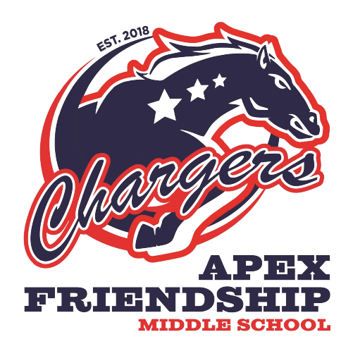

My name is Drew Mason and this is a test page created by myself that allows me to test and learn about buttons and the beauty of web development. You just came from a previous page by clicking button two, that was done by HTML and CSS.
What is CSS? CSS or Cascading Style Sheets is a computer language that touches up a website and makes it look worthy of being published. A good analogy for CSS is like building a fence with html and then going back and painting it. The definition for CSS is "Cascading Style Sheets is a style sheet language used for describing the presentation of a document written in a markup language like HTML. CSS is a cornerstone technology of the World Wide Web, alongside HTML and JavaScript." Below is an example of my CSS skills as well as the background color. 